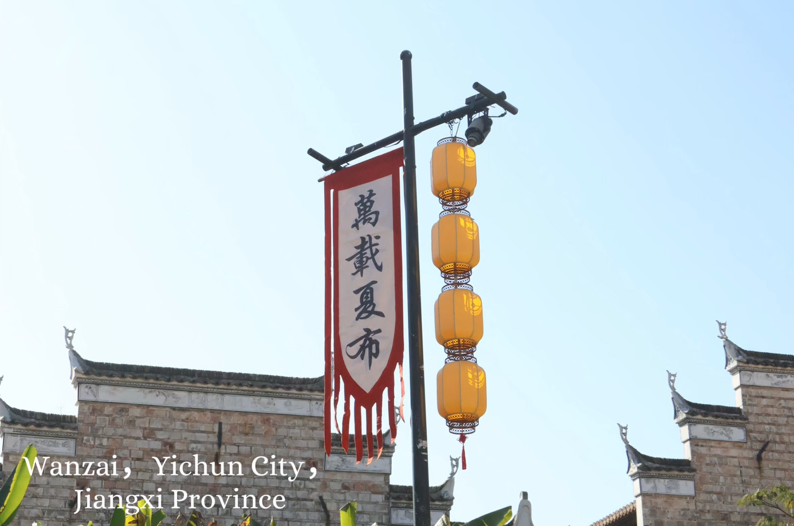
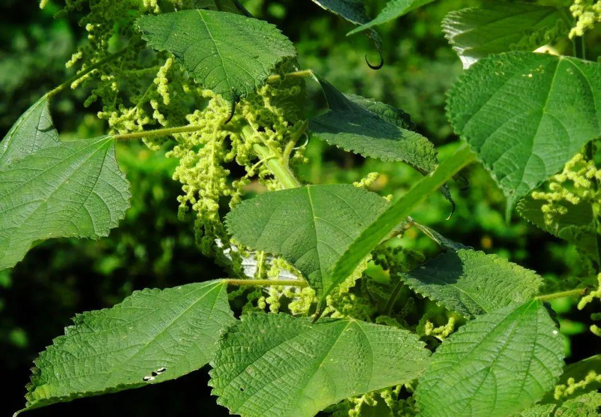
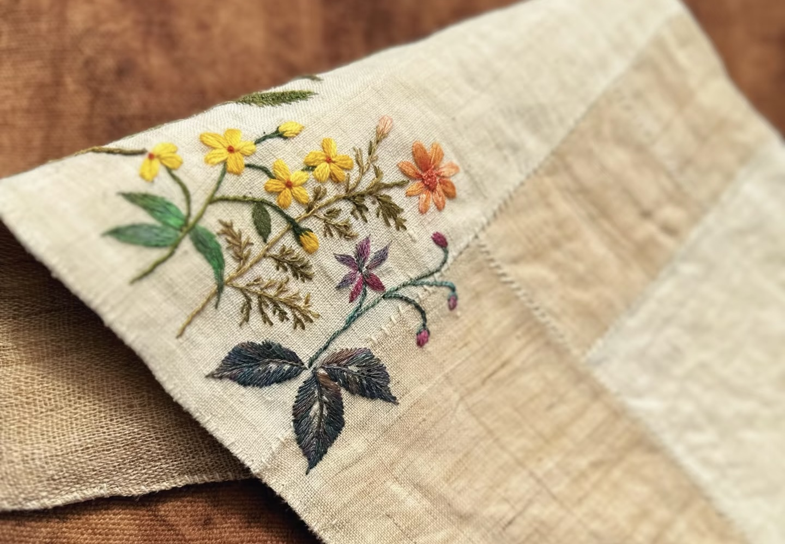
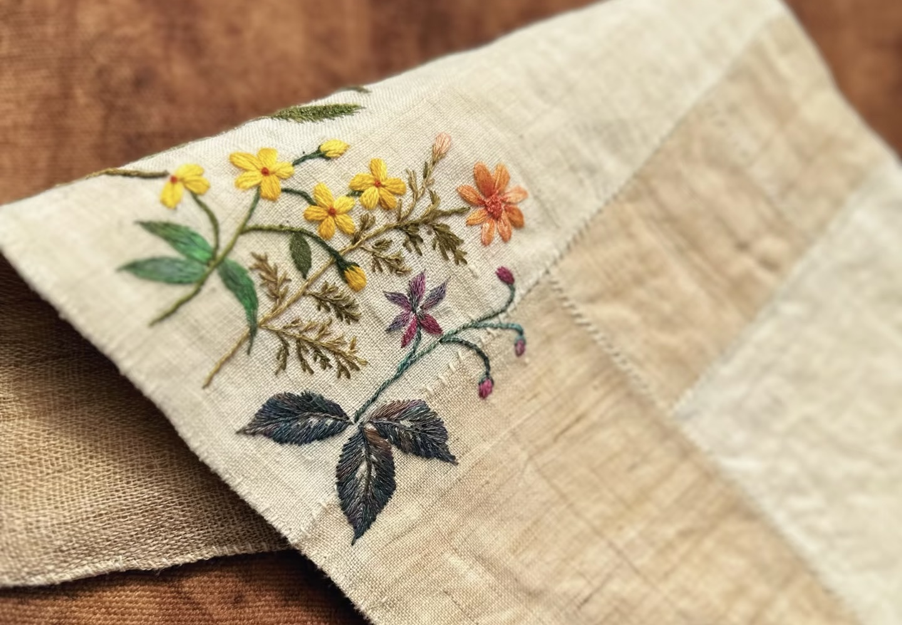
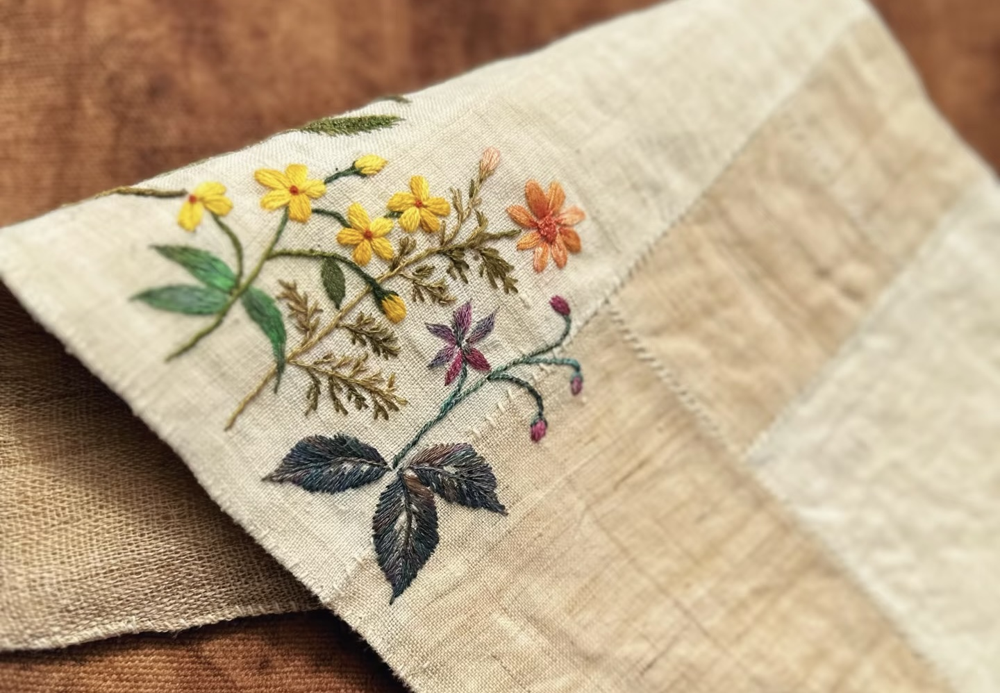

江西夏布
夏布，又称“中国草”，是以苎麻为原料编织而成的一种传统手工纺织品。江西夏布以其质地细腻、轻薄透气、吸湿排汗的特性而闻名。在炎热的夏季，穿着夏布制成的衣物，能感受到无与伦比的清凉与舒适。夏布的制作工艺复杂，包括收割、浸泡、剥麻、纺纱、织布等数十道工序，全部由手工完成，蕴含着丰富的传统智慧和技艺。
江西的万载、分宜等地是夏布的主要产区，其生产历史可以追溯到唐宋时期。夏布不仅是制作衣物的上佳材料，还可用于制作手帕、扇面、书画卷轴等。随着现代纺织技术的发展，传统夏布技艺面临失传的风险。保护和传承夏布制作技艺，对于保留中国传统纺织文化具有重要意义。

 



篝灯四壁，机声轧轧，卒发之谋，常取具于是。”双林人几乎都是在家里生产夏布，也有少部分无织机的农户，自己理好麻线请织匠织布，以解决家庭衣物之需。因为织布时需要保持环境湿润，这样苎麻才不易断，因此人们会在家里的角落为织机支棱一个稍密闭的空间，旁边放上一盆水，在狭小的场所里穿梭经纬。夏天，还有人到山洞里织布，阴凉、湿润，可谓一个绝佳的织布场所，这也成为双林夏布织造史上一个有趣又独特的亮点。
春秋两季是织布的好时节。
人们多将织布机安置在室内靠窗的位置，白天能借光织布，因地面采用泥土夯实而成，也能保持麻纱湿润不易断裂，否则底粒多影响夏布质量。
织布讲究身体的协调性，男女皆可，需要手、腰、脚并用。丢梭推筘的力度要均匀，如此所织夏布的平面边沿才平顺、伸展。夏季天气炎热，就有织工将织机搬到山洞里，环境既凉爽又湿润，被称为“夏布洞”，或在家里用塑料薄膜将织布机合成一个相对封闭的小空间进行织布。